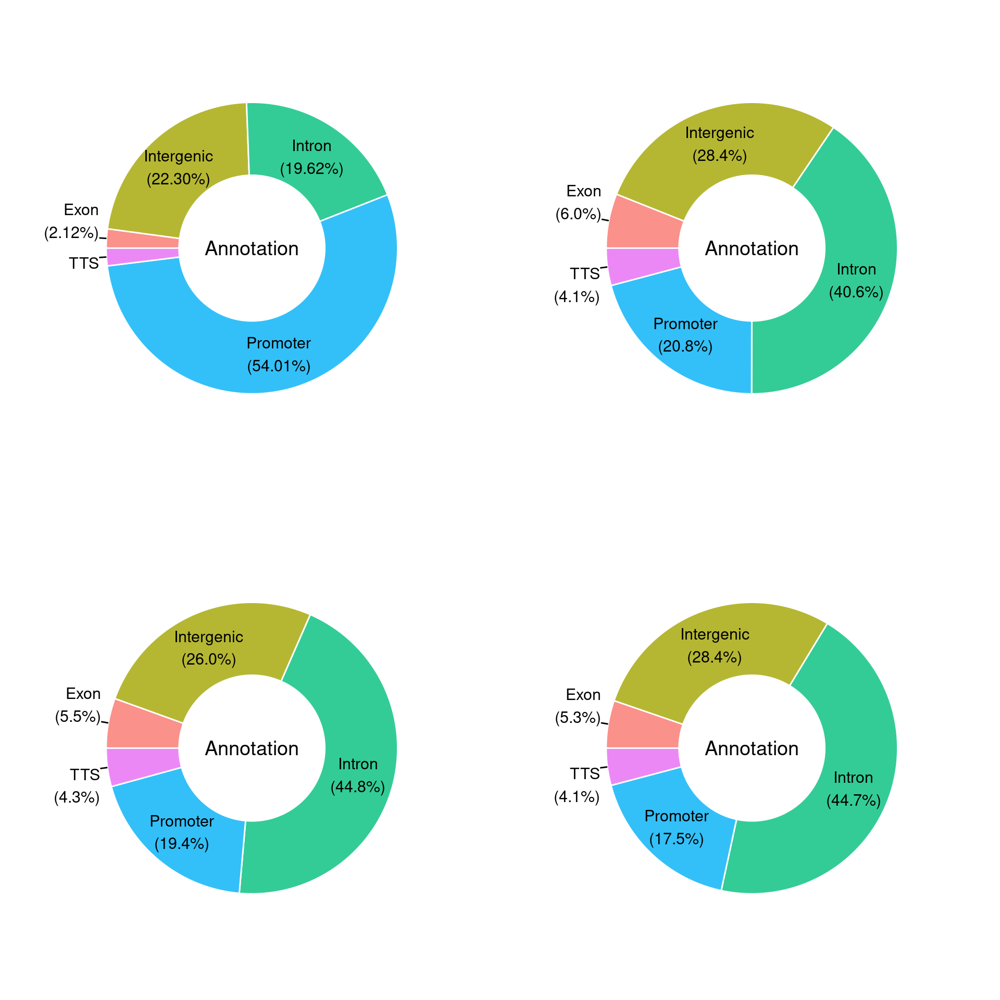
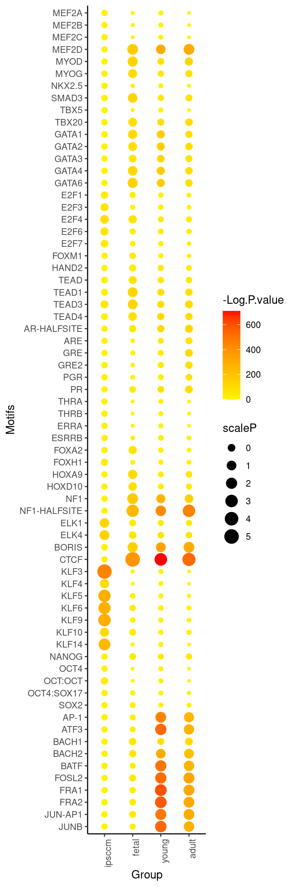

Last updated: 2021-02-19
Checks: 7 0
Knit directory: Human_Development_ATACseq_bulk/
This reproducible R Markdown analysis was created with workflowr (version 1.6.2). The Checks tab describes the reproducibility checks that were applied when the results were created. The Past versions tab lists the development history.
Great! Since the R Markdown file has been committed to the Git repository, you know the exact version of the code that produced these results.
Great job! The global environment was empty. Objects defined in the global environment can affect the analysis in your R Markdown file in unknown ways. For reproduciblity it’s best to always run the code in an empty environment.
The command set.seed(20210216) was run prior to running the code in the R Markdown file. Setting a seed ensures that any results that rely on randomness, e.g. subsampling or permutations, are reproducible.
Great job! Recording the operating system, R version, and package versions is critical for reproducibility.
Nice! There were no cached chunks for this analysis, so you can be confident that you successfully produced the results during this run.
Great job! Using relative paths to the files within your workflowr project makes it easier to run your code on other machines.
Great! You are using Git for version control. Tracking code development and connecting the code version to the results is critical for reproducibility.
The results in this page were generated with repository version 294d830. See the Past versions tab to see a history of the changes made to the R Markdown and HTML files.
Note that you need to be careful to ensure that all relevant files for the analysis have been committed to Git prior to generating the results (you can use wflow_publish or wflow_git_commit). workflowr only checks the R Markdown file, but you know if there are other scripts or data files that it depends on. Below is the status of the Git repository when the results were generated:
Ignored files:
Ignored: .Rhistory
Ignored: .Rproj.user/
Untracked files:
Untracked: *.noXYMT.bed.tidy.bed
Untracked: *xls.bg.bed
Untracked: *xls.dn.bed
Untracked: *xls.up.bed
Untracked: Development_noXY.jn.rnk
Untracked: FetalvsYoung_noXY.jn.rnk
Untracked: Homo_sapiens.GRCh38.96.fulllength.saf
Untracked: YoungvsAdult_noXY.jn.rnk
Untracked: analysis/*.dn.bed.homeranno.txt
Untracked: analysis/*.up.bed.homeranno.txt
Untracked: analysis/00.WorkFlowR_setting.R
Untracked: code/EnDrich.R
Untracked: code/EnDrichProc_Development_noXY.R
Untracked: code/EnDrichProc_FetalvsYoung_noXY.R
Untracked: code/EnDrichProc_YoungvsAdult_noXY.R
Untracked: header.sam
Untracked: humanATAC*bed.saf
Untracked: humanATAC*bed.saf.pe.q30.mx
Untracked: humanATAC*bed.saf.pe.q30.mx.all
Untracked: humanATAC*bed.saf.pe.q30.mx.all.fix
Untracked: humanATAC*bed.saf.pe.q30.mx.chr
Untracked: humanATAC*bed.saf.pe.q30.mx.fix
Untracked: humanATAC*bed.saf.pe.q30.mx.hum.fix
Untracked: output/20190801_ATAC_samplesheet.txt
Untracked: output/ATACseq_samplesheet.txt
Untracked: output/atac_hum_tss_pe_mapk30_q30.mx.all_unfiltered.csv
Untracked: output/atac_hum_tss_pe_mapk30_q30.mx.chr
Untracked: output/atac_hum_tss_pe_mapk30_q30.mx.hum.fix_filt.csv
Untracked: output/humanATAC_peaks_cov2_rmBL.bed.saf.pe.q30.mx.MvsF.fix_filt.csv
Untracked: output/humanATAC_peaks_cov2_rmBL.bed.saf.pe.q30.mx.all.fix_filt.csv
Untracked: output/humanATAC_peaks_cov2_rmBL.bed.saf.pe.q30.mx.all_unfiltered.csv
Untracked: output/humanATAC_peaks_cov2_rmBL.bed.saf.pe.q30.mx.hum.fix_filt.csv
Untracked: output/logCPM_humanATAC_peaks_cov2_rmBL.bed.saf.pe.q30.mx.all.fix_filt.csv
Unstaged changes:
Modified: analysis/about.Rmd
Modified: analysis/index.Rmd
Modified: analysis/license.Rmd
Note that any generated files, e.g. HTML, png, CSS, etc., are not included in this status report because it is ok for generated content to have uncommitted changes.
These are the previous versions of the repository in which changes were made to the R Markdown (analysis/03.Peak_Annotation_and_Homer_Analysis.Rmd) and HTML (docs/03.Peak_Annotation_and_Homer_Analysis.html) files. If you’ve configured a remote Git repository (see ?wflow_git_remote), click on the hyperlinks in the table below to view the files as they were in that past version.
| File | Version | Author | Date | Message |
|---|---|---|---|---|
| Rmd | 294d830 | evangelynsim | 2021-02-19 | wflow_publish(c(“analysis/01.Generate_reference_genome.Rmd”, |
Following merging samples from the same group in the Primary Analysis section, perform peak annotationa and transcription factor motif analysis using Homer.
library(ggplot2)
library(moonBook)
library(webr)
library(waffle)
library(extrafont)Registering fonts with Rlibrary(grid)
library(gridExtra)
library(cowplot)
********************************************************Note: As of version 1.0.0, cowplot does not change the default ggplot2 theme anymore. To recover the previous behavior, execute:
theme_set(theme_cowplot())********************************************************library(ggpubr)
Attaching package: 'ggpubr'The following object is masked from 'package:cowplot':
get_legendfiles = list.files(path = "/group/card2/Evangelyn_Sim/Transcriptome_chromatin_human/Sequencing_ATAC_RNA/20180726_hATACseq_MF/seqaln/rename/rmdup/merge/combine/mapq30/group/macs/homerpkstats_noXYMT", pattern = ".bed", full.names = T)
mx = lapply(files, read.delim, header=F)
for(i in 1:length(mx)){
mx[[i]] = mx[[i]][!grepl("Y",mx[[i]]$V1),]
mx[[i]] = mx[[i]][!grepl("X",mx[[i]]$V1),]
mx[[i]] = mx[[i]][!grepl("MT",mx[[i]]$V1),]
#write.table(mx[[i]], file = paste0(files[[i]], ".noXYMT.bed"), col.names = F, row.names = F, sep = "\t")
}
#!/bin/bash
for BED in *.noXYMT.bed ; do
cat $BED | sed 's/\"//' | sed 's/\"//' | sed 's/\"//' | sed 's/\"//' > $BED.tidy.bed
done
cat: *.noXYMT.bed: No such file or directory#!/bin/bash
set -x
REF=/group/card2/Evangelyn_Sim/Transcriptome_chromatin_human/Sequencing_ATAC_RNA/refgenome/Homo_sapiens.GRCh38.96.gtf
#PATH=$PATH:/group/card2/Evangelyn_Sim/NGS/app/homer/.//bin/
for BED in *.tidy.bed ; do
OUT=$BED.homeranno.txt
mkdir go/$BED
annotatePeaks.pl $BED hg38 -gtf $REF -go go/$BED -annStats $BED.stats.txt > $OUT
donefiles = list.files(path = "/group/card2/Evangelyn_Sim/Transcriptome_chromatin_human/Sequencing_ATAC_RNA/20180726_hATACseq_MF/seqaln/rename/rmdup/merge/combine/mapq30/group/macs/homerpkstats_noXYMT", pattern = ".stats.txt", full.names = T)
mx = lapply(files, read.delim, header=T)
files[1] "/group/card2/Evangelyn_Sim/Transcriptome_chromatin_human/Sequencing_ATAC_RNA/20180726_hATACseq_MF/seqaln/rename/rmdup/merge/combine/mapq30/group/macs/homerpkstats_noXYMT/adult.mapq30.mg.bam_macs_peaks.bed.rmBL.bed.noXYMT.bed.tidy.bed.stats.txt"
[2] "/group/card2/Evangelyn_Sim/Transcriptome_chromatin_human/Sequencing_ATAC_RNA/20180726_hATACseq_MF/seqaln/rename/rmdup/merge/combine/mapq30/group/macs/homerpkstats_noXYMT/adultF.mapq30.mg.bam_macs_peaks.bed.rmBL.bed.noXYMT.bed.tidy.bed.stats.txt"
[3] "/group/card2/Evangelyn_Sim/Transcriptome_chromatin_human/Sequencing_ATAC_RNA/20180726_hATACseq_MF/seqaln/rename/rmdup/merge/combine/mapq30/group/macs/homerpkstats_noXYMT/adultM.mapq30.mg.bam_macs_peaks.bed.rmBL.bed.noXYMT.bed.tidy.bed.stats.txt"
[4] "/group/card2/Evangelyn_Sim/Transcriptome_chromatin_human/Sequencing_ATAC_RNA/20180726_hATACseq_MF/seqaln/rename/rmdup/merge/combine/mapq30/group/macs/homerpkstats_noXYMT/fetal.mapq30.mg.bam_macs_peaks.bed.rmBL.bed.noXYMT.bed.tidy.bed.stats.txt"
[5] "/group/card2/Evangelyn_Sim/Transcriptome_chromatin_human/Sequencing_ATAC_RNA/20180726_hATACseq_MF/seqaln/rename/rmdup/merge/combine/mapq30/group/macs/homerpkstats_noXYMT/ipsccm.mapq30.mg.bam_macs_peaks.bed.rmBL.bed.noXYMT.bed.tidy.bed.stats.txt"
[6] "/group/card2/Evangelyn_Sim/Transcriptome_chromatin_human/Sequencing_ATAC_RNA/20180726_hATACseq_MF/seqaln/rename/rmdup/merge/combine/mapq30/group/macs/homerpkstats_noXYMT/ipsccmF.mapq30.mg.bam_macs_peaks.bed.rmBL.bed.noXYMT.bed.tidy.bed.stats.txt"
[7] "/group/card2/Evangelyn_Sim/Transcriptome_chromatin_human/Sequencing_ATAC_RNA/20180726_hATACseq_MF/seqaln/rename/rmdup/merge/combine/mapq30/group/macs/homerpkstats_noXYMT/ipsccmM.mapq30.mg.bam_macs_peaks.bed.rmBL.bed.noXYMT.bed.tidy.bed.stats.txt"
[8] "/group/card2/Evangelyn_Sim/Transcriptome_chromatin_human/Sequencing_ATAC_RNA/20180726_hATACseq_MF/seqaln/rename/rmdup/merge/combine/mapq30/group/macs/homerpkstats_noXYMT/young.mapq30.mg.bam_macs_peaks.bed.rmBL.bed.noXYMT.bed.tidy.bed.stats.txt" for(i in 1:length(mx)){
mxFDR = mx[[i]][c(1:5),]
#write.table(mxFDR,
# file = paste0(gsub("./|.txt","",files[[i]]),".tidy.txt"),
# col.names = T, row.names = F, sep = "\t")
}
#PieDonut
files1 = list.files(path = "/group/card2/Evangelyn_Sim/Transcriptome_chromatin_human/Sequencing_ATAC_RNA/20180726_hATACseq_MF/seqaln/rename/rmdup/merge/combine/mapq30/group/macs/homerpkstats_noXYMT", pattern = ".stats.tidy.txt", full.names = T)
mx1 = lapply(files1, read.delim, header=T)
for(j in 1:length(mx1)){
mx1[[j]]$totalpeaks = sum(mx1[[j]]$Number.of.peaks)
mx1[[j]]$percentage = round(mx1[[j]]$Number.of.peaks/sum(mx1[[j]]$Number.of.peaks) *100, digits = 2)
#write.table(mx1[[j]],
# file = paste0(gsub("./|.txt","",files[[j]]),".tidy.txt"),
# col.names = T, row.names = F, sep = "\t")
mx[[j]]=PieDonut(mx1[[j]],aes(Annotation,count=Number.of.peaks),r0=0.5,start=3*pi/2,labelpositionThreshold=0.1)
}multi = arrangeGrob(mx[[5]],mx[[4]],mx[[8]],mx[[1]],
ncol = 2, nrow = 2)
plot = as_ggplot(multi)
plot
#!/bin/bash
set -x
CWD=/group/card2/Evangelyn_Sim/Transcriptome_chromatin_human/Sequencing_ATAC_RNA/20180726_hATACseq_MF/seqaln/rename/rmdup/merge/combine/mapq30/group/macs/homertf_noXYMT
echo $CWD
REF=/group/card2/Evangelyn_Sim/Transcriptome_chromatin_human/Sequencing_ATAC_RNA/refgenome/Homo_sapiens.GRCh38.dna_sm.primary_assembly.fa
cd $CWD
#Call Homer enriched motifs with default background, then with ATAC peak BG
for FG in *.tidy.bed ; do
cd $CWD
BED=$CWD/$FG
#find enriched motifs
findMotifsGenome.pl $FG $REF $FG.df.out -p 10 -keepFiles
cd $FG.df.out
rm -rf instances
mkdir instances
cd instances
for i in ../homerResults/motif*.motif ; do
BASE=`basename $i`
mkdir $BASE
findMotifsGenome.pl $BED $REF $BASE -find $i | sort -k6gr > $BASE/$BASE &
done
cd $CWD
done
wait
for MOTIF in `find . | grep instances | grep motif$` ; do
OUT=$MOTIF.bed
awk '{print $1,$2,length($3)}' $MOTIF \
| grep -v PositionID | cut -d '_' -f2 \
| tr ':' '\t' | sed 's/-/\t/' \
| awk '{printf "%s\t%.0f\t%.0f\n", $1,(($2+$3)/2)+$4-10,(($2+$3)/2)+$4+10}' > $OUT
donePATH = "/group/card2/Evangelyn_Sim/Transcriptome_chromatin_human/Sequencing_ATAC_RNA/20180726_hATACseq_MF/seqaln/rename/rmdup/merge/combine/mapq30/group/macs/homertf_noXYMT/"
ipsccm = read.delim(paste0(PATH,"ipsccm.mapq30.mg.bam_macs_peaks.bed.rmBL.bed.noXYMT.bed.tidy.bed.df.out/knownResults.txt"), header = T)
fetal = read.delim(paste0(PATH,"fetal.mapq30.mg.bam_macs_peaks.bed.rmBL.bed.noXYMT.bed.tidy.bed.df.out/knownResults.txt"), header = T)
young = read.delim(paste0(PATH,"young.mapq30.mg.bam_macs_peaks.bed.rmBL.bed.noXYMT.bed.tidy.bed.df.out/knownResults.txt"), header = T)
adult = read.delim(paste0(PATH,"adult.mapq30.mg.bam_macs_peaks.bed.rmBL.bed.noXYMT.bed.tidy.bed.df.out/knownResults.txt"), header = T)
ipsccmF = read.delim(paste0(PATH,"ipsccmF.mapq30.mg.bam_macs_peaks.bed.rmBL.bed.noXYMT.bed.tidy.bed.df.out/knownResults.txt"), header = T)
ipsccmM = read.delim(paste0(PATH,"ipsccmM.mapq30.mg.bam_macs_peaks.bed.rmBL.bed.noXYMT.bed.tidy.bed.df.out/knownResults.txt"), header = T)
adultF = read.delim(paste0(PATH,"adultF.mapq30.mg.bam_macs_peaks.bed.rmBL.bed.noXYMT.bed.tidy.bed.df.out/knownResults.txt"), header = T)
adultM = read.delim(paste0(PATH,"adultM.mapq30.mg.bam_macs_peaks.bed.rmBL.bed.noXYMT.bed.tidy.bed.df.out/knownResults.txt"), header = T)
ipsccm$`-Log.P.value` = -(ipsccm$Log.P.value)
fetal$`-Log.P.value` = -(fetal$Log.P.value)
young$`-Log.P.value` = -(young$Log.P.value)
adult$`-Log.P.value` = -(adult$Log.P.value)
ipsccmF$`-Log.P.value` = -(ipsccmF$Log.P.value)
ipsccmM$`-Log.P.value` = -(ipsccmM$Log.P.value)
adultF$`-Log.P.value` = -(adultF$Log.P.value)
adultM$`-Log.P.value` = -(adultM$Log.P.value)
ipsccm = ipsccm[,c(1,10)]
fetal = fetal[,c(1,10)]
young = young[,c(1,10)]
adult = adult[,c(1,10)]
ipsccmF = ipsccmF[,c(1,10)]
ipsccmM = ipsccmM[,c(1,10)]
adultF = adultF[,c(1,10)]
adultM = adultM[,c(1,10)]
ipsccm$Group = "ipsccm"
fetal$Group = "fetal"
young$Group = "young"
adult$Group = "adult"
ipsccmF$Group = "ipsccmF"
ipsccmM$Group = "ipsccmM"
adultF$Group = "adultF"
adultM$Group = "adultM"
ipsccmsl = ipsccm[c(1:50),]
fetalsl = fetal[c(1:50),]
youngsl = young[c(1:50),]
adultsl = adult[c(1:50),]
ipsccmFsl = ipsccmF[c(1:50),]
ipsccmMsl = ipsccmM[c(1:50),]
adultFsl = adultF[c(1:50),]
adultMsl = adultM[c(1:50),]
motifssl = rbind(ipsccmsl, fetalsl, youngsl, adultsl, ipsccmFsl, ipsccmMsl, adultFsl, adultMsl)
motifssl = motifssl[!duplicated(motifssl$Motif.Name),]
motifssl = motifssl[order(motifssl$Motif.Name),]
#write.table(motifssl, file = "top50motif_from_8gps.txt", col.names = T, row.names = F, sep = "\t")
mt2 = read.delim(paste0(PATH,"top50motif_from_8gps_selected_final.txt"), header = T)
mt2 Motif.Name X.NAME.
1 AP-1(bZIP)/ThioMac-PU.1-ChIP-Seq(GSE21512)/Homer 453.000
2 AR-halfsite(NR)/LNCaP-AR-ChIP-Seq(GSE27824)/Homer 103.600
3 ARE(NR)/LNCAP-AR-ChIP-Seq(GSE27824)/Homer 91.810
4 Atf3(bZIP)/GBM-ATF3-ChIP-Seq(GSE33912)/Homer 530.700
5 Bach1(bZIP)/K562-Bach1-ChIP-Seq(GSE31477)/Homer 81.940
6 Bach2(bZIP)/OCILy7-Bach2-ChIP-Seq(GSE44420)/Homer 306.300
7 BATF(bZIP)/Th17-BATF-ChIP-Seq(GSE39756)/Homer 502.200
8 BORIS(Zf)/K562-CTCFL-ChIP-Seq(GSE32465)/Homer 142.300
9 CTCF(Zf)/CD4+-CTCF-ChIP-Seq(Barski_et_al.)/Homer 386.600
10 E2F1(E2F)/Hela-E2F1-ChIP-Seq(GSE22478)/Homer 28.530
11 E2F3(E2F)/MEF-E2F3-ChIP-Seq(GSE71376)/Homer 52.060
12 E2F4(E2F)/K562-E2F4-ChIP-Seq(GSE31477)/Homer 77.640
13 E2F6(E2F)/Hela-E2F6-ChIP-Seq(GSE31477)/Homer 54.770
14 E2F7(E2F)/Hela-E2F7-ChIP-Seq(GSE32673)/Homer 38.250
15 Elk1(ETS)/Hela-Elk1-ChIP-Seq(GSE31477)/Homer 117.900
16 Elk4(ETS)/Hela-Elk4-ChIP-Seq(GSE31477)/Homer 133.000
17 Fosl2(bZIP)/3T3L1-Fosl2-ChIP-Seq(GSE56872)/Homer 524.200
18 Foxa2(Forkhead)/Liver-Foxa2-ChIP-Seq(GSE25694)/Homer 65.800
19 Foxh1(Forkhead)/hESC-FOXH1-ChIP-Seq(GSE29422)/Homer 15.750
20 Fra1(bZIP)/BT549-Fra1-ChIP-Seq(GSE46166)/Homer 598.400
21 Fra2(bZIP)/Striatum-Fra2-ChIP-Seq(GSE43429)/Homer 575.900
22 Gata1(Zf)/K562-GATA1-ChIP-Seq(GSE18829)/Homer 103.500
23 Gata2(Zf)/K562-GATA2-ChIP-Seq(GSE18829)/Homer 88.290
24 GATA3(Zf)/iTreg-Gata3-ChIP-Seq(GSE20898)/Homer 125.400
25 Gata4(Zf)/Heart-Gata4-ChIP-Seq(GSE35151)/Homer 115.500
26 Gata6(Zf)/HUG1N-GATA6-ChIP-Seq(GSE51936)/Homer 135.200
27 GRE(NR),IR3/A549-GR-ChIP-Seq(GSE32465)/Homer 102.500
28 GRE(NR),IR3/RAW264.7-GRE-ChIP-Seq(Unpublished)/Homer 84.770
29 Hoxa9(Homeobox)/ChickenMSG-Hoxa9.Flag-ChIP-Seq(GSE86088)/Homer 102.800
30 Hoxd10(Homeobox)/ChickenMSG-Hoxd10.Flag-ChIP-Seq(GSE86088)/Homer 78.260
31 Jun-AP1(bZIP)/K562-cJun-ChIP-Seq(GSE31477)/Homer 489.300
32 JunB(bZIP)/DendriticCells-Junb-ChIP-Seq(GSE36099)/Homer 546.800
33 KLF10(Zf)/HEK293-KLF10.GFP-ChIP-Seq(GSE58341)/Homer 95.830
34 KLF14(Zf)/HEK293-KLF14.GFP-ChIP-Seq(GSE58341)/Homer 247.300
35 KLF3(Zf)/MEF-Klf3-ChIP-Seq(GSE44748)/Homer 450.600
36 Klf4(Zf)/mES-Klf4-ChIP-Seq(GSE11431)/Homer 100.600
37 KLF5(Zf)/LoVo-KLF5-ChIP-Seq(GSE49402)/Homer 285.000
38 KLF6(Zf)/PDAC-KLF6-ChIP-Seq(GSE64557)/Homer 281.000
39 Klf9(Zf)/GBM-Klf9-ChIP-Seq(GSE62211)/Homer 296.600
40 Mef2d(MADS)/Retina-Mef2d-ChIP-Seq(GSE61391)/Homer 164.800
41 MyoD(bHLH)/Myotube-MyoD-ChIP-Seq(GSE21614)/Homer 136.000
42 MyoG(bHLH)/C2C12-MyoG-ChIP-Seq(GSE36024)/Homer 90.970
43 NF1-halfsite(CTF)/LNCaP-NF1-ChIP-Seq(Unpublished)/Homer 245.300
44 NF1(CTF)/LNCAP-NF1-ChIP-Seq(Unpublished)/Homer 168.800
45 OCT:OCT(POU,Homeobox)/NPC-OCT6-ChIP-Seq(GSE43916)/Homer 95.090
46 Oct4:Sox17(POU,Homeobox,HMG)/F9-Sox17-ChIP-Seq(GSE44553)/Homer 7.823
47 PR(NR)/T47D-PR-ChIP-Seq(GSE31130)/Homer 72.210
48 Smad3(MAD)/NPC-Smad3-ChIP-Seq(GSE36673)/Homer 117.600
49 Tbx20(T-box)/Heart-Tbx20-ChIP-Seq(GSE29636)/Homer 89.720
50 TEAD1(TEAD)/HepG2-TEAD1-ChIP-Seq(Encode)/Homer 126.500
51 TEAD3(TEA)/HepG2-TEAD3-ChIP-Seq(Encode)/Homer 48.250
52 TEAD4(TEA)/Tropoblast-Tead4-ChIP-Seq(GSE37350)/Homer 78.750
53 Tbx5(T-box)/HL1-Tbx5.biotin-ChIP-Seq(GSE21529)/Homer 0.000
54 Erra(NR)/HepG2-Erra-ChIP-Seq(GSE31477)/Homer 0.000
55 THRb(NR)/Liver-NR1A2-ChIP-Seq(GSE52613)/Homer 0.000
56 THRa(NR)/C17.2-THRa-ChIP-Seq(GSE38347)/Homer 0.000
57 Mef2a(MADS)/HL1-Mef2a.biotin-ChIP-Seq(GSE21529)/Homer 0.000
58 FOXM1(Forkhead)/MCF7-FOXM1-ChIP-Seq(GSE72977)/Homer 0.000
59 Mef2b(MADS)/HEK293-Mef2b.V5-ChIP-Seq(GSE67450)/Homer 0.000
60 Mef2c(MADS)/GM12878-Mef2c-ChIP-Seq(GSE32465)/Homer 0.000
61 Nkx2.5(Homeobox)/HL1-Nkx2.5.biotin-ChIP-Seq(GSE21529)/Homer 0.000
62 Oct4(POU,Homeobox)/mES-Oct4-ChIP-Seq(GSE11431)/Homer 0.000
63 Nanog(Homeobox)/mES-Nanog-ChIP-Seq(GSE11724)/Homer 0.000
64 Sox2(HMG)/mES-Sox2-ChIP-Seq(GSE11431)/Homer 0.000
65 Esrrb(NR)/mES-Esrrb-ChIP-Seq(GSE11431)/Homer 0.000
66 PGR(NR)/EndoStromal-PGR-ChIP-Seq(GSE69539)/Homer 0.000
67 TEAD(TEA)/Fibroblast-PU.1-ChIP-Seq(Unpublished)/Homer 0.000
68 Hand2(bHLH)/Mesoderm-Hand2-ChIP-Seq(GSE61475)/Homer 0.000
Group
1 young
2 young
3 adultF
4 young
5 young
6 young
7 young
8 fetal
9 fetal
10 ipsccm
11 ipsccm
12 ipsccm
13 ipsccm
14 ipsccm
15 ipsccm
16 ipsccm
17 young
18 fetal
19 ipsccmF
20 young
21 young
22 fetal
23 fetal
24 young
25 fetal
26 fetal
27 adult
28 adult
29 fetal
30 fetal
31 young
32 young
33 ipsccm
34 ipsccm
35 ipsccm
36 ipsccm
37 ipsccm
38 ipsccm
39 ipsccm
40 fetal
41 fetal
42 fetal
43 fetal
44 fetal
45 ipsccmF
46 ipsccmF
47 young
48 fetal
49 fetal
50 fetal
51 ipsccm
52 fetal
53 added
54 added
55 added
56 added
57 added
58 added
59 added
60 added
61 added
62 added
63 added
64 added
65 added
66 added
67 added
68 added ipsccm_mt2_scale = ipsccm[ipsccm$Motif.Name %in% as.factor(mt2$Motif.Name),]
fetal_mt2_scale = fetal[fetal$Motif.Name %in% as.factor(mt2$Motif.Name),]
young_mt2_scale = young[young$Motif.Name %in% as.factor(mt2$Motif.Name),]
adult_mt2_scale = adult[adult$Motif.Name %in% as.factor(mt2$Motif.Name),]
ipsccm_mt2_scale$scaleP = scale(ipsccm_mt2_scale$`-Log.P.value`)
fetal_mt2_scale$scaleP = scale(fetal_mt2_scale$`-Log.P.value`)
young_mt2_scale$scaleP = scale(young_mt2_scale$`-Log.P.value`)
adult_mt2_scale$scaleP = scale(adult_mt2_scale$`-Log.P.value`)
mmg4_mt2_scale = rbind(ipsccm_mt2_scale, fetal_mt2_scale, young_mt2_scale, adult_mt2_scale)
mmg4_mt2_scale$Motif.Name = gsub("GRE[(]NR[)][,]IR3[/]RAW","GRE2(NR),IR3/RAW",mmg4_mt2_scale$Motif.Name)
mmg4_mt2_scale$Motifs = gsub("[(].*", "", mmg4_mt2_scale$Motif.Name)
mmg4_mt2_scale$Motifs = gsub("/.*", "", mmg4_mt2_scale$Motifs)
mmg4_mt2_scale$Motifs = toupper(mmg4_mt2_scale$Motifs)
mmg4_mt2_scale$Group = factor(mmg4_mt2_scale$Group, levels = c("ipsccm", "fetal","young","adult"))
mmg4_mt2_scale$Motifs = factor(mmg4_mt2_scale$Motifs,
levels = c("JUNB","JUN-AP1","FRA2","FRA1","FOSL2","BATF","BACH2","BACH1","ATF3","AP-1",
"SOX2","OCT4:SOX17","OCT:OCT","OCT4","NANOG",
"KLF14","KLF10","KLF9","KLF6","KLF5","KLF4","KLF3","CTCF","BORIS",
"ELK4","ELK1",
"NF1-HALFSITE","NF1","HOXD10","HOXA9","FOXH1","FOXA2",
"ESRRB","ERRA","THRB","THRA","PR","PGR","GRE2","GRE","ARE","AR-HALFSITE",
"TEAD4", "TEAD3","TEAD1","TEAD","HAND2","FOXM1","E2F7","E2F6","E2F4","E2F3","E2F1",
"GATA6","GATA4","GATA3","GATA2","GATA1",
"TBX20","TBX5","SMAD3","NKX2.5","MYOG","MYOD","MEF2D","MEF2C","MEF2B","MEF2A")) ggplot(mmg4_mt2_scale,aes_(x= ~Group , y= ~Motifs, size=~scaleP))+
geom_point(aes(color = `-Log.P.value`)) +
theme_classic()+
theme(axis.text.x = element_text(angle = 90, hjust = 1))+
scale_color_gradient2(midpoint = mean(mmg4_mt2_scale$`-Log.P.value`)+250, low = "yellow", mid = "orange",
high = "red", space = "Lab")
sessionInfo()R version 3.6.1 (2019-07-05)
Platform: x86_64-pc-linux-gnu (64-bit)
Running under: CentOS Linux 7 (Core)
Matrix products: default
BLAS: /hpc/software/installed/R/3.6.1/lib64/R/lib/libRblas.so
LAPACK: /hpc/software/installed/R/3.6.1/lib64/R/lib/libRlapack.so
locale:
[1] LC_CTYPE=en_US.UTF-8 LC_NUMERIC=C
[3] LC_TIME=en_US.UTF-8 LC_COLLATE=en_US.UTF-8
[5] LC_MONETARY=en_US.UTF-8 LC_MESSAGES=en_US.UTF-8
[7] LC_PAPER=en_US.UTF-8 LC_NAME=C
[9] LC_ADDRESS=C LC_TELEPHONE=C
[11] LC_MEASUREMENT=en_US.UTF-8 LC_IDENTIFICATION=C
attached base packages:
[1] grid stats graphics grDevices utils datasets methods
[8] base
other attached packages:
[1] ggpubr_0.4.0 cowplot_1.0.0 gridExtra_2.3 extrafont_0.17
[5] waffle_0.7.0 webr_0.1.5 moonBook_0.2.3 ggplot2_3.3.2
[9] workflowr_1.6.2
loaded via a namespace (and not attached):
[1] nlme_3.1-150 fs_1.5.0 RColorBrewer_1.1-2
[4] insight_0.9.0 rprojroot_1.3-2 tools_3.6.1
[7] backports_1.1.10 R6_2.5.0 DT_0.14
[10] sjlabelled_1.1.6 colorspace_1.4-1 withr_2.3.0
[13] tidyselect_1.1.0 mnormt_1.5-6 extrafontdb_1.0
[16] curl_4.3 compiler_3.6.1 git2r_0.27.1
[19] flextable_0.5.10 xml2_1.3.2 officer_0.3.12
[22] labeling_0.4.2 scales_1.1.1 lmtest_0.9-38
[25] psych_1.9.12.31 readr_1.4.0 systemfonts_0.2.3
[28] stringr_1.4.0 digest_0.6.27 foreign_0.8-71
[31] editData_0.1.2 rmarkdown_2.5 rio_0.5.16
[34] base64enc_0.1-3 pkgconfig_2.0.3 htmltools_0.5.0
[37] fastmap_1.0.1 rvg_0.2.5 htmlwidgets_1.5.2
[40] rlang_0.4.7 readxl_1.3.1 rstudioapi_0.11
[43] shiny_1.5.0 farver_2.0.3 generics_0.1.0
[46] zoo_1.8-8 jsonlite_1.7.0 dplyr_1.0.2
[49] zip_2.1.1 car_3.0-10 magrittr_1.5
[52] Rcpp_1.0.5 munsell_0.5.0 abind_1.4-5
[55] gdtools_0.2.2 lifecycle_0.2.0 stringi_1.5.3
[58] whisker_0.4 yaml_2.2.1 carData_3.0-4
[61] MASS_7.3-51.6 parallel_3.6.1 promises_1.1.1
[64] sjmisc_2.8.5 forcats_0.5.0 crayon_1.3.4
[67] miniUI_0.1.1.1 lattice_0.20-41 haven_2.3.1
[70] hms_0.5.3 knitr_1.30 pillar_1.4.6
[73] uuid_0.1-4 ggsignif_0.6.0 glue_1.4.2
[76] evaluate_0.14 data.table_1.13.2 vcd_1.4-8
[79] vctrs_0.3.2 tweenr_1.0.1 httpuv_1.5.4
[82] Rttf2pt1_1.3.8 cellranger_1.1.0 gtable_0.3.0
[85] purrr_0.3.4 polyclip_1.10-0 tidyr_1.1.2
[88] xfun_0.18 ggforce_0.3.2 openxlsx_4.2.3
[91] mime_0.9 xtable_1.8-4 broom_0.7.0
[94] rstatix_0.6.0 later_1.1.0.1 tibble_3.0.3
[97] shinyWidgets_0.5.4 rrtable_0.2.1 ellipsis_0.3.1
[100] ztable_0.2.0 devEMF_3.8